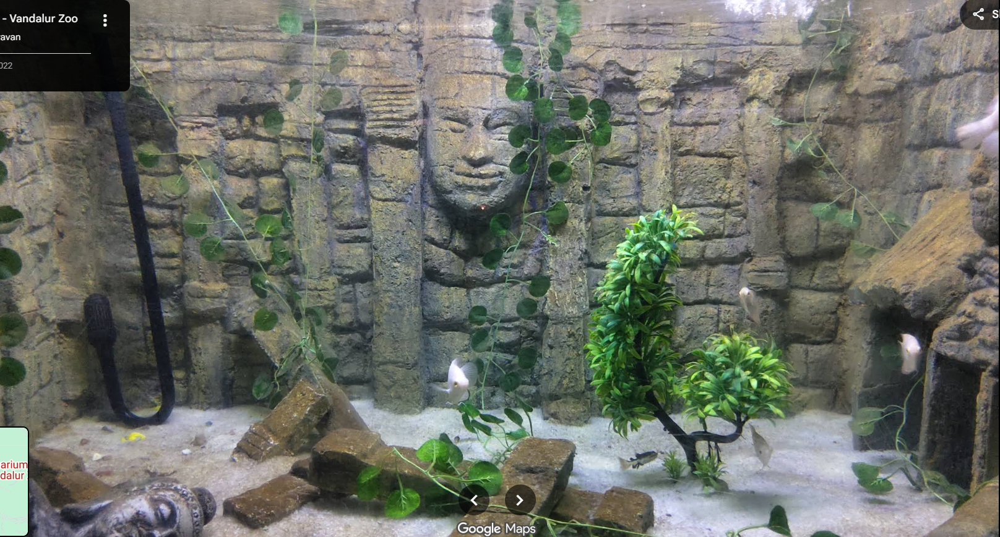

The Vandalur Aquarium is a prominent public aquarium located near Chennai, Tamil Nadu, India. It is part of the Arignar Anna Zoological Park (commonly known as Vandalur Zoo), which is one of the largest zoos in South Asia. The aquarium showcases a diverse range of aquatic life, providing visitors an opportunity to explore and learn about marine and freshwater ecosystems.
Key Features of Vandalur Aquarium:
Diverse Aquatic Species: The aquarium houses various species of fish, amphibians, and aquatic reptiles, including both freshwater and marine varieties.
Educational Exhibits: Designed to educate visitors about aquatic biodiversity, conservation, and the importance of protecting water habitats.
Interactive Displays: Some sections feature interactive tanks where visitors can observe the behaviors and adaptations of different aquatic creatures.
Modern Facilities: The aquarium is equipped with well-maintained tanks and a climate-controlled environment to ensure the health and longevity of the species on display.
Family-Friendly: It is a popular destination for families, students, and tourists looking to enjoy and understand underwater life up close.
Overall, the Vandalur Aquarium serves as an important educational and recreational space that complements the larger zoo environment by highlighting aquatic biodiversity and promoting awareness of aquatic conservation efforts.